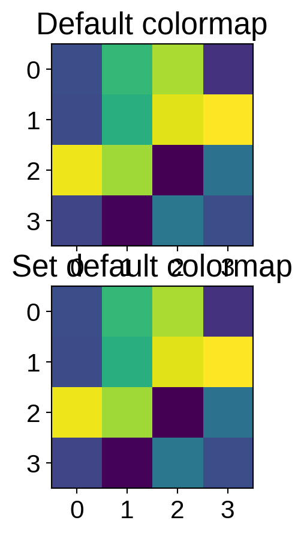
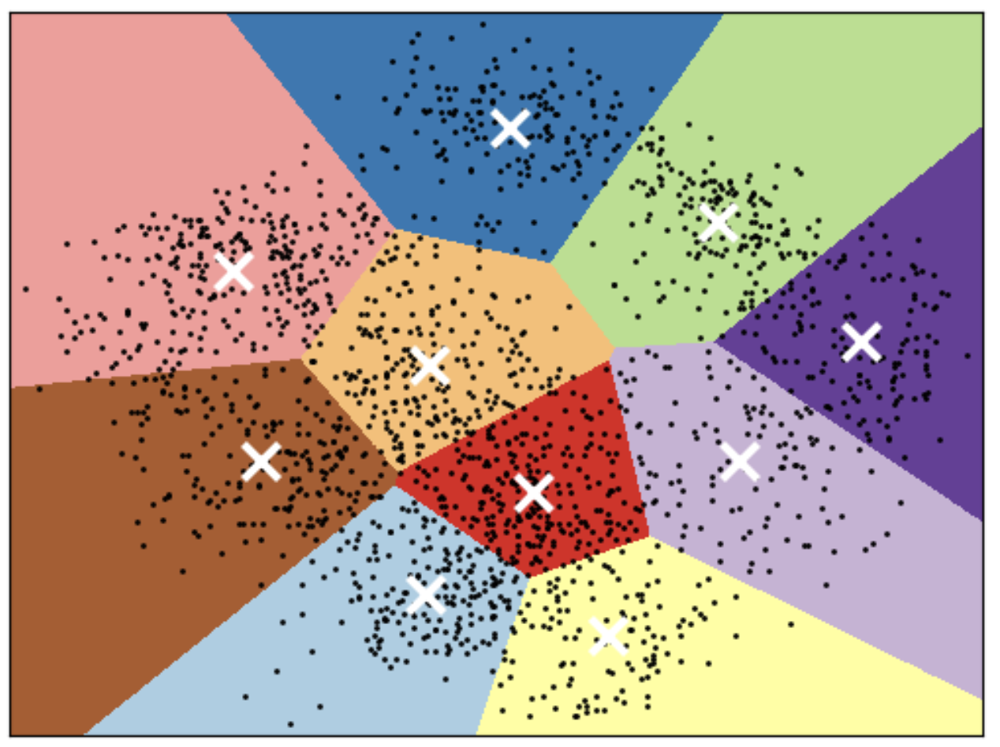
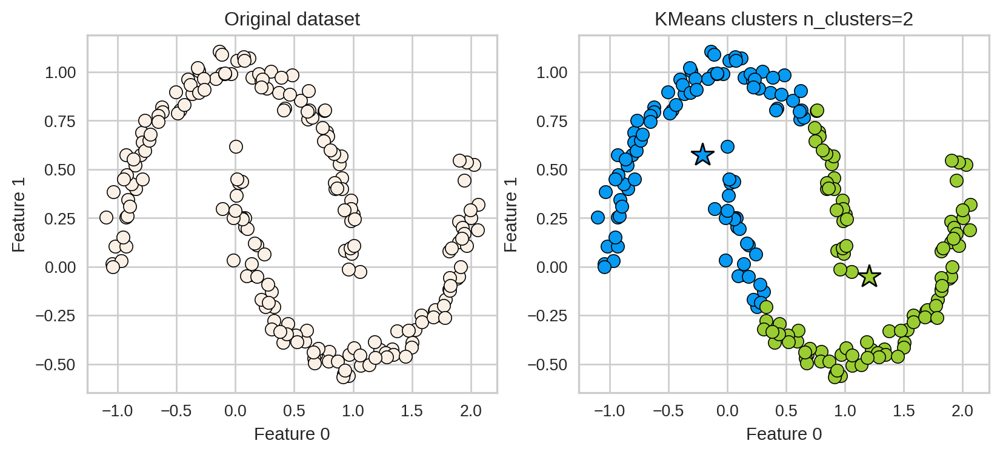
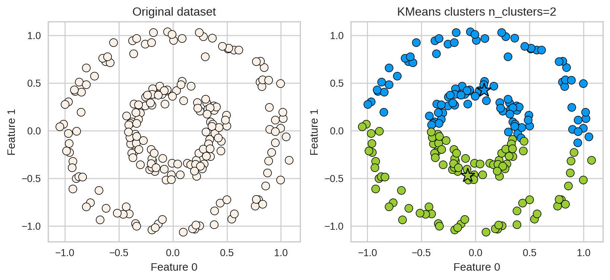
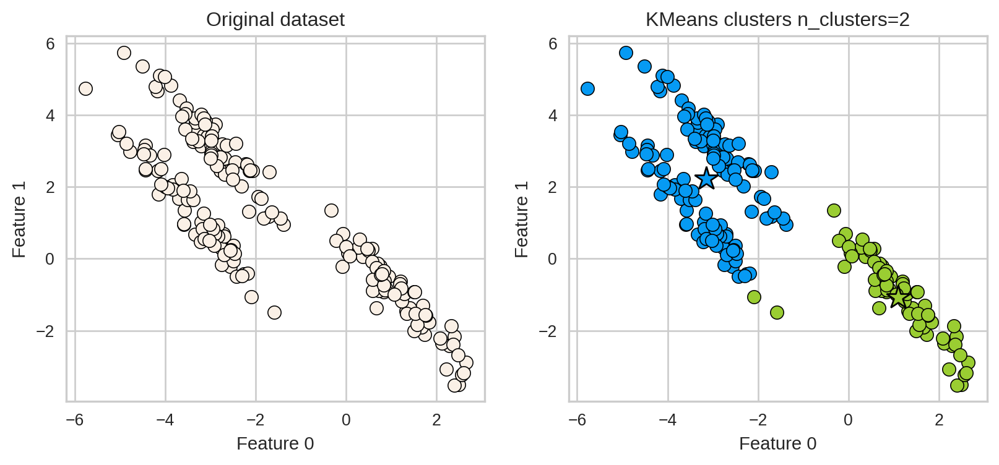
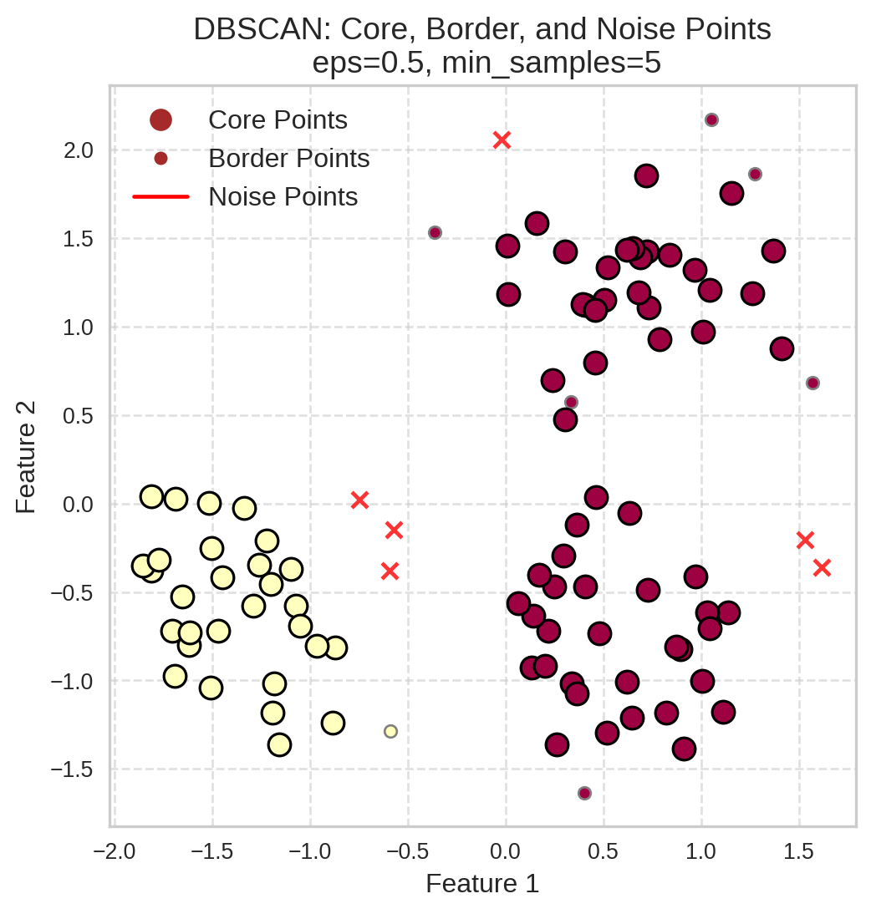
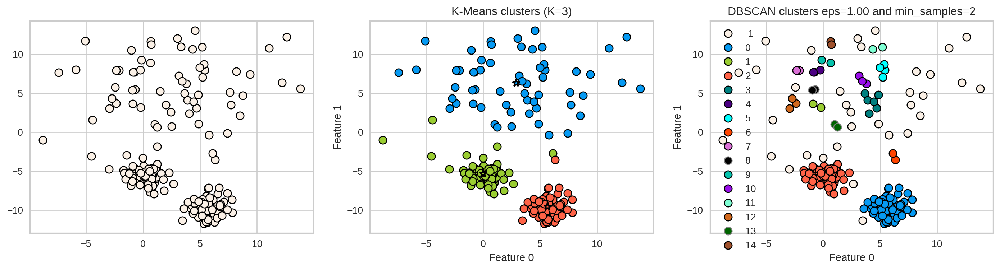
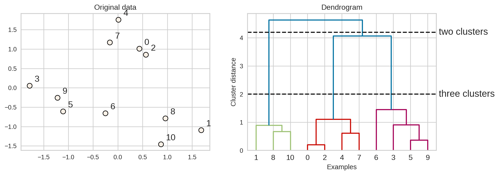
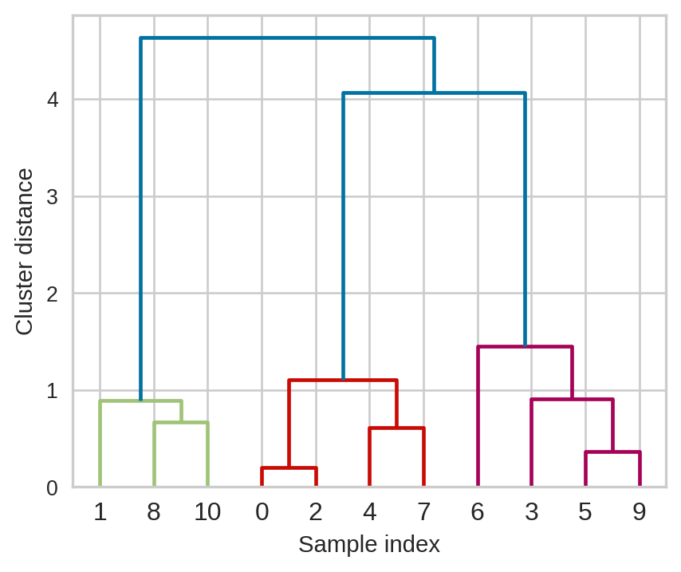

CPSC 330 Lecture 15: DBSCAN, Hierarchical Clustering
iClicker Exercise 15.1
Select all of the following statements which are TRUE.
- With n examples, K clusters, and d features, K-Means learns K cluster centers, each d-dimensional.
- The meaning of k in k-nearest neighbours and K-Means clustering is very similar.
- Scaling of input features is crucial in clustering.
- Scaling of input features is crucial in clustering.
- In clustering, it’s almost always a good idea to find equal-sized clusters.
Limitations of K-means
Shape of clusters
- Good for spherical clusters of more or less equal sizes

K-Means: failure case 1
- K-Means performs poorly if the clusters have more complex shapes (e.g., two moons data below).

K-Means: failure case 2
- Again, K-Means is unable to capture complex cluster shapes.

K-Means: failure case 3
- It assumes that all directions are equally important for each cluster and fails to identify non-spherical clusters.

Can we do better?
DBSCAN
- Density-Based Spatial Clustering of Applications with Noise
- A density-based clustering algorithm
Two main hyperparameters
In order to identify dense regions, we need two hyperparameters:
eps: determines what it means for points to be “close”min_samples: determines the number of neighbouring points we require to consider in order for a point to be part of a cluster
DBSCAN analogy

Consider DBSCAN in a social context:
- Social butterflies (🦋): Core points
- Friends of social butterflies who are not social butterflies: Border points
- Lone wolves (🐺): Noise points
DBSCAN algorithm

- Pick a point p at random.
- Check whether p is a “core” point or not.
- If p is a core point, give it a colour (label).
- Spread the colour of p to all of its neighbours.
- Check if any of the neighbours that received the colour is a core point, if yes, spread the colour to its neighbors as well.
- Once there are no more core points left to spread the colour, pick a new unlabeled point p and repeat the process.
Clustering Algorithm Visualizer
Here is a really nice web-app to visualize Clustering
🧩 Human DBSCAN activity
Goal
Experience how ϵ (eps) and min_samples affect what counts as a cluster.
Setup
- Each student = one data point
- Distance (eps) = arm’s length (~1 m)
- Each gets a sticky note to mark cluster ID and a marker (colour)
- Start from a random student: check who is within ϵ
Two parallel runs
| Side of Class | ϵ (eps) | min_samples | Expected Outcome |
|---|---|---|---|
| Left side | ~1 m (arm’s length) | 5 | Moderate clusters; Some isolated ones become noise points. |
| Right side | ~1 m (arm’s length) | 15 | Few or no clusters; the density requirement is high. Many noise points. |
How to play
- Pick a starting student.
- Count how many of your neighbours are within ϵ distance.
- If you have ≥ min_samples, you are a core point → start spreading your colour.
- Neighbours who receive a colour but aren’t core are border points.
- Students who never receive a colour are noise points.
After the activity
- Which side formed more clusters?
- What happened when min_samples was too high?
- Why doesn’t DBSCAN need to know the number of clusters k?
How to tune eps and min_samples?
- Can you use
GridSearchCVandRandomizedSearchCV?
DBSCAN: failure cases
- Let’s consider this dataset with three clusters of varying densities.
- K-Means performs better compared to DBSCAN. But it has the benefit of knowing the value of K in advance.
[ 0 1 2 3 4 5 6 7 8 9 10 11 12 13 14 15]
Hierarchical clustering

Dendrogram

- Dendrogram is a tree-like plot.
- On the x-axis we have data points.
- On the y-axis we have distances between clusters.
Flat clusters
- This is good but how can we get cluster labels from a dendrogram?
- We can bring the clustering to a “flat” format use
fcluster
Flat clusters
Linkage criteria
- When we create a dendrogram, we need to calculate distance between clusters. How do we measure distances between clusters?
- The linkage criteria determines how to find similarity between clusters:
- Some example linkage criteria are:
- Single linkage → smallest minimal distance, leads to loose clusters
- Complete linkage → smallest maximum distance, leads to tight clusters
- Average linkage → smallest average distance between all pairs of points in the clusters
- Ward linkage → smallest increase in within-cluster variance, leads to equally sized clusters
Example: Single linkage
Suppose you want to go from 3 clusters to 2 clusters. Which clusters would you merge?
Example: Single linkage
iClicker Exercise 15.2
Select all of the following statements which are True
- In hierarchical clustering we do not have to worry about initialization.
- Hierarchical clustering can only be applied to smaller datasets because dendrograms are hard to visualize for large datasets.
- In all the clustering methods we have seen (K-Means, DBSCAN, hierarchical clustering), there is a way to decide the number of clusters.
- To get robust clustering we can naively ensemble cluster labels (e.g., pick the most popular label) produced by different clustering methods.
- If you have a high Silhouette score and very clean and robust clusters, it means that the algorithm has captured the semantic meaning in the data of our interest.
Activity
Discuss the following
| Clustering Method | KMeans | DBSCAN | Hierarchical Clustering |
|---|---|---|---|
| Approach | |||
| Hyperparameters | |||
| Shape of clusters | |||
| Handling noise | |||
| Distance metric |
Discussion question
Which clustering method would you use in each of the scenarios below? Why? How would you represent the data in each case?
- Scenario 1: Customer segmentation in retail
- Scenario 2: An environmental study aiming to identify clusters of a rare plant species
- Scenario 3: Clustering furniture items for inventory management and customer recommendations
Break
Let’s take a break!
Group Work: Class Demo & Live Coding
Super cool Demo!
For this demo, each student should click this link to create a new repo in their accounts, then clone that repo locally to follow along with the demo from today.
All credit to Dr. Varada Kolhatkar for putting this together!